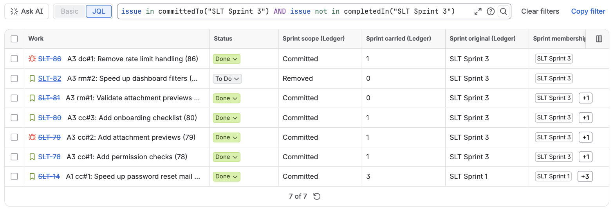

Sprint Ledger adds nine functions to Jira's query language. Each one is written issue in f(...) or issue not in f(...), and works wherever JQL works: the issue search, saved filters, board filters, dashboard gadgets, automation rules and filter subscriptions. Combine them with any other clause.

| Function | Returns |
|---|---|
addedAfterSprintStart(sprint?, board?) | Issues that joined the sprint after it started |
removedFromSprint(sprint?, board?) | Issues taken out after it started and before it closed |
committedTo(sprint?, board?) | Issues that were in the sprint the moment it started |
completedIn(sprint?, board?) | Issues in the sprint at completion whose status counted as done |
carriedOverFrom(sprint?, board?) | Issues in the sprint at completion that were not done |
carriedOver(n) | Issues that have rolled out of at least n closed sprints |
sprintsNamed(sprint, board?) | Issues in the named sprints now |
openSprintsNamed(sprint, board?) | The same, for those of the sprints that are active |
futureSprintsNamed(sprint, board?) | The same, for those of the sprints that have not started |
The first six answer from the sprint history the app reconstructs, so they know what happened inside sprints that closed years ago. The last three answer with Jira's own Sprint field, so they are about what is in the sprints now. What "added", "removed", "committed" and "done" mean exactly, and where the answers can differ from Jira's Sprint Report, is on How Sprint Ledger counts.
| You write | It means |
|---|---|
"Sprint 42" | Every sprint with that name, on any board. Upper and lower case are ignored, as in Jira's own sprint = "...". |
"Dev: 25_1*" | A pattern: every sprint whose name matches. * stands for any run of characters and is the only wildcard; _, ? and every other character mean themselves. Patterns cover the sprints of the projects Sprint Ledger tracks. |
5231 | The sprint with that ID. Use it when several boards share a sprint name and you want only one. |
nothing: addedAfterSprintStart() | Every active sprint of the tracked projects. Only the six history functions accept this; the three name-and-state functions need a sprint. |
"Sprint 7", "ACME board" | A board name as the second argument narrows a name or a pattern to that board's sprints. |
A name or a pattern that matches more than 200 sprints is refused with a message asking you to narrow it, rather than answered from part of the list. A sprint created or renamed so that it matches a pattern is included within seconds, including in saved filters.
addedAfterSprintStart(sprint?, board?)Issues whose membership of the sprint began after the sprint's start and before its completion: the asterisked issues of Jira's Sprint Report. An issue that was in the sprint at the start, was taken out and was put back counts as committed, not added, exactly as the report treats it.
project = ACME AND issue in addedAfterSprintStart("ACME Sprint 42")
sprint in openSprints() AND issue in addedAfterSprintStart()removedFromSprint(sprint?, board?)Issues that were in the sprint at some point after it started and were no longer in it when it completed, or are no longer in it now, for an active sprint. That includes issues added after the start and removed again; Jira's report lists those only as removed, Sprint Ledger answers both questions.
issue in removedFromSprint("ACME Sprint 41") AND issue not in committedTo("ACME Sprint 42")That one is the query people ask for most: what was dropped from last sprint and not picked up in this one.
committedTo(sprint?, board?)Issues that were in the sprint at the moment it started, whatever happened to them afterwards.
issue in committedTo("ACME Sprint 41") AND issue not in completedIn("ACME Sprint 41")completedIn(sprint?, board?)Issues that were in the sprint when it was completed and whose status then counted as done: by default a status in the board's rightmost column, as the Sprint Report counts it, or any status in the Done category if an administrator has chosen that on the admin page. It answers for closed sprints only: while a sprint runs, which issues it will complete is not decided yet.
carriedOverFrom(sprint?, board?)Issues that were in the sprint when it was completed and were not done: the report's "Issues Not Completed". Closed sprints only, like completedIn.
issue in carriedOverFrom("Dev: 25_1*") AND issue not in completedIn("Dev: 25_1*")Work that carried out of one of a quarter's sprints and was not finished in any of them.
carriedOver(n)Issues that have been carried out of at least n closed sprints, counting every sprint they were ever in. n is a whole number of at least 1. The same count is the Sprint carried (Ledger) field, which is handy for sorting.
issue in carriedOver(2) AND statusCategory != Done ORDER BY "Sprint carried (Ledger)" DESCThese answer "what is in these sprints now", by name or pattern and by state. The app turns the argument into Jira's own sprint in (...) list for you, with the state applied before Jira sees the list. That is what makes a dashboard of a team's active sprints exact: sprint in openSprints() next to a separate name condition also matches an issue that moved from a closed "Plan" sprint into an open "Dev" sprint, because Jira checks each condition against all of an issue's sprints.
sprintsNamed(sprint, board?)Issues in the named sprints now, whatever the sprints' state.
issue in sprintsNamed("Dev: 26_*") AND statusCategory != DoneopenSprintsNamed(sprint, board?)Issues in those of the named sprints that are active.
futureSprintsNamed(sprint, board?)Issues in those of the named sprints that have not started.
issue in openSprintsNamed("Dev: *") OR issue in futureSprintsNamed("Dev: *")A filter for the active and upcoming sprints of every board that names its sprints "Dev: YY_MM", with no list of sprints to keep up to date. When none of the named sprints is in the state, between two sprints for example, the answer is empty rather than an error. Jira refuses a sprint the person searching cannot see, so if some of a pattern's sprints sit on boards not everyone can see, narrow the pattern or add the board name.
When an argument cannot be answered, the JQL editor shows a message instead of an empty result:
| Message | What to do |
|---|---|
| Sprint Ledger: no sprint named 'Sprnt 42'. Check the spelling or use the sprint ID. | Check the name. A sprint on a board Sprint Ledger has never read is not in its history; the admin page lists the boards it has read. |
| Sprint Ledger: no sprint matches 'Dev: 27_*'. Check the spelling or use the sprint ID. | The same, for a pattern. |
| Sprint Ledger: more than 200 sprints match 'SLT*'. Narrow the pattern or name a board. | Make the pattern more specific, or add a board name. |
| Sprint Ledger: more than 200 sprints are named 'Sprint 1'. Use the sprint ID. | Use the ID, or add a board name. |
| Sprint Ledger: no board named 'ACME bord'. | Check the board's name as Jira shows it. |
| Sprint Ledger: no active sprint found. Name a sprint or use its ID. | The empty argument means "every active sprint", and there is none right now. |
| Sprint Ledger: carriedOver(n) needs a whole number of sprints of at least 1, for example carriedOver(2). | Give n as 1, 2, 3 and so on. |
| Sprint Ledger: the sprint history has not been reconstructed yet. Try again in a few minutes. | The first reconstruction after installing is still running; the admin page shows its progress. |
Jira keeps the answer to a function call and reuses it in saved filters, board filters, gadgets and automation conditions without asking the app again. Sprint Ledger updates those stored answers itself: when a sprint starts or completes, when a sprint is created, renamed or deleted, and once a day for everything. So a saved filter with addedAfterSprintStart() follows the new sprint within seconds of it starting, and a pattern picks up a new matching sprint just as quickly.
The functions answer for the projects Sprint Ledger tracks; an issue of a project that is turned off on the admin page is never returned. Subtasks are left out unless an administrator has turned on counting them, which is also how Jira's Sprint Report treats them.
issue in committedTo("ACME Sprint 41") AND issue in removedFromSprint("ACME Sprint 41")
issue in addedAfterSprintStart("Sprint 7", "ACME board")
project = ACME AND issue in carriedOver(3) ORDER BY "Sprint carried (Ledger)" DESC
issue in completedIn("ACME Sprint 41") AND issue in addedAfterSprintStart("ACME Sprint 41")
issue in openSprintsNamed("Plan: *") AND assignee = currentUser()In order: what was committed and then taken out; what was added to a sprint of one board when several boards use the same names; the work that keeps rolling over; what was added mid-sprint and still finished; and your own work in the active planning sprints. Queries over the fields alone, with dates, are on the fields page.